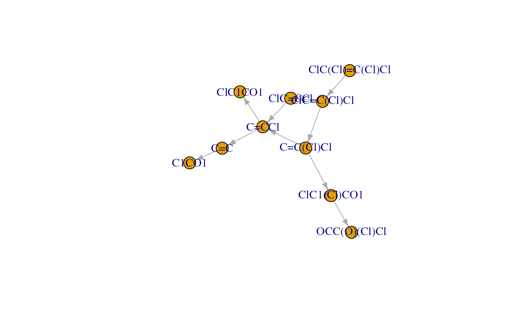

epModel predicts the biotransformation pathway for a compound expressed with
smiles using the selected model setting.
epModel(smiles, setting = NULL)Arguments
Value
A list with two data frames with information on nodes and edges, respectively.
Examples
library(igraph)
#>
#> Attaching package: ‘igraph’
#> The following objects are masked from ‘package:stats’:
#>
#> decompose, spectrum
#> The following object is masked from ‘package:base’:
#>
#> union
library(ggraph)
#> Loading required package: ggplot2
# Perform login
epLogin(username, password)
#> Hi nature lover, welcome to enviPath!
# Define smiles of interest
smiles <- "ClC(Cl)=C(Cl)Cl"
# Perform pathway prediction with enviFormer
former_out <- epModel(smiles)
# List available model settings
set_df <- epList("setting")
# View some model settings
head(set_df)
#> name
#> 1 Global Setting - enviFormer
#> 2 Global Setting - ECC and App Domain
#> 3 Global Setting - ECC and App Domain - PEPPER
#> 4 Global Setting - BBD Rules
#> id
#> 1 1d915a48-286a-4394-9693-bfaa187326a5
#> 2 3c8e789f-cf5f-4db2-9b77-b152d32e52e9
#> 3 3cda8e56-f4ff-47a8-b68c-4cfcfc4e8c2a
#> 4 a0fbc3d8-ca45-44f1-9c3c-80d8531ffe25
# Set id for PEPPER model setting
set_name <- "Global Setting - ECC and App Domain - PEPPER"
set_id <- set_df$id[set_df$name == set_name]
# Perform pathway prediction with PEPPER
pepper_out <- epModel(smiles, set_id)
# Convert model output to igraph object
path_graph <- graph_from_data_frame(
pepper_out$edges,
vertices = pepper_out$nodes
)
# Visualise predicted pathway
plot(path_graph)

# Visualise with ggraph
ggraph(path_graph, layout = "sugiyama") +
geom_edge_link(
aes(colour = probability),
arrow = arrow(type = "closed")
) +
geom_node_point(size = 3) +
geom_node_text(aes(label = name), vjust = 2) +
scale_edge_colour_continuous(
limits = c(0, 1), low = "white", high = "red"
) +
theme_graph()